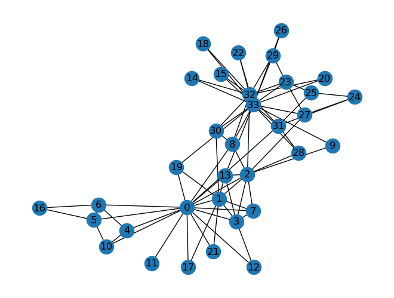
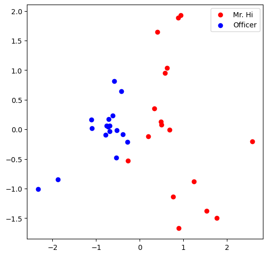
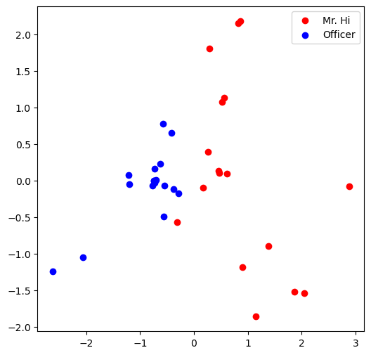

TP: Réseaux de neurones graphiques¶
Dans ce TP, on va appliquer les concepts d’extraction de caractéristiques et de node embedding sur un dataset classique Karate Club Network.
Représentation graphique avec networkx¶
Zachary’s karate club network¶
Zachary’s karate club est un graphe décrivant un réseau social de 34 membres d’un club de karaté. Les liens représentent les interactions entre les membres en dehors du club.
Output

Question 1 : quel est le degré moyen du karaté club ?¶
def average_degree(num_edges, num_nodes):
# Cette fonction retourne le degré moyen du graphe.
avg_degree = 0
avg_degree = round(2 * num_edges/num_nodes)
return avg_degree
num_edges = G.number_of_edges()
num_nodes = G.number_of_nodes()
print("Nombre d'arêtes :", num_edges, "Nombre de noeuds :", num_nodes)
avg_degree = average_degree(num_edges, num_nodes)
print("Le degré moyen du karaté club est : {}".format(avg_degree))
Output
Nombre d’arêtes : 78 Nombre de noeuds : 34 Le degré moyen du karaté club est : 5
Question 2 : quel est le coefficient de clustering moyen du karaté club ?¶
def average_clust_coef(G):
# Cette fonction retourne le coefficient de clustring moyen du caracté club
####### Code ########
avg_cluster_coef = nx.algorithms.cluster.average_clustering(G)
#####################
return avg_cluster_coef
avg_cluster_coef = average_clust_coef(G)
print("Le coefficient de clustering moyen du karaté club est : {}".format(avg_cluster_coef))
Output
Le coefficient de clustering moyen du karaté club est : 0.5706384782076823
Question 3 : quelle est la centralité de proximité du noeud numéro 5 ?¶
Output
La centralité de proximité est définie par : \(c(v) = \frac{1}{\sum_{u \neq v}\text{le chemin le plus court entre } u \text{ and } v}\)
def closeness_centrality(G, node = 5):
# Cette fonction retourne la centralité de proximité d'un noeud donné
###### Code #######
degree_centrality = nx.algorithms.centrality.closeness_centrality(G)
closeness = degree_centrality[node]
###################
return closeness
node = 5
closeness = closeness_centrality(G, node=node)
print("La centralité de proximité du noeud numéro 5 est : {}".format(closeness))
Output
La centralité de proximité du noeud numéro 5 est : 0.38372093023255816
Question 4 : quelle est la centralité intermédiaire associée à un noeud donné du karacté club ?¶
def betweeness_centrality(G, node = 5):
# Cette fonction retourne la centralité intermédiaire d'un noeud donné
####### Code ########
btw_centrality = nx.algorithms.centrality.betweenness_centrality(G)
betweeness = btw_centrality[node]
#####################
return betweeness
node = 5
betweeness = betweeness_centrality(G, node=node)
print("La centralité intermédiaire du noeud numéro 5 est : {}".format(closeness))
Output
La centralité intermédiaire du noeud numéro 5 est : 0.38372093023255816
2 Graphe en Tenseur¶
Nous allons transformer le graphe G en tenseur Pytorch.
Question 5 : Liste des arêtes du Karaté club en format torch.LongTensor. Quel le nombe d’arêtes positives ?¶
def graph_to_edge_list(G):
# Cette fonction retourne la liste des arêtes d'un graphe sous forme
# de couplet composé de deux noeuds.
edge_list = []
lst1 = []
lst2 = []
############# Code ############
edge_list = list(G.edges())
#########################################
return edge_list
def edge_list_to_tensor(edge_list):
# Cette fonction transforme un liste d'arêtes en Tenseur Pytorch
# de dimension [2 x len(edge_list)]
edge_index = torch.tensor([])
############# Code ############
edge_index = torch.tensor(edge_list, dtype = torch.long).permute((1,0))
#########################################
return edge_index
pos_edge_list = graph_to_edge_list(G)
# print(pos_edge_list)
pos_edge_index = edge_list_to_tensor(pos_edge_list)
print("La dimension de pos_edge_index est : {}".format(pos_edge_index.shape))
print("La somme des valeurs de pos_edge_index : {}".format(torch.sum(pos_edge_index)))
Output
La dimension de pos_edge_index est : torch.Size([2, 78]) La somme des valeurs de pos_edge_index : 2535
Question 6 : Ecrire une fonction qui retourne les arêtes négatives.¶
import random
def sample_negative_edges(G, num_neg_samples):
# Cette fonction retourne la liste des arêtes négatives.
neg_edge_list = []
pos_set = set(G.edges())
visited_set = set()
############# Code ############
for n_i in G.nodes():
for n_j in G.nodes():
if n_i == n_j or (n_i,n_j) in pos_set or (n_j,n_i) in pos_set or (n_i,n_j) in visited_set or (n_j, n_i) is visited_set:
continue
neg_edge_list.append((n_i,n_j))
visited_set.add((n_i,n_j))
visited_set.add((n_j,n_i))
if len(neg_edge_list) == num_neg_samples:
break
###############################
return neg_edge_list
# Echantillon de 78 arêtes négatives
neg_edge_list = sample_negative_edges(G, len(pos_edge_list))
# Convertir la liste des arêtes négatives en tenseur
neg_edge_index = edge_list_to_tensor(neg_edge_list)
print("Le tenseur neg_edge_index est de dimension {}".format(neg_edge_index.shape))
# Quelles sont les arêtes négatives parmi les arêtes suivantes ?
edge_1 = (7, 1)
edge_2 = (1, 33)
edge_3 = (33, 22)
edge_4 = (0, 4)
edge_5 = (4, 2)
Output
Le tenseur neg_edge_index est de dimension torch.Size([2, 483])
Output
False
Node Embeddings¶
import torch
import torch.nn as nn
import matplotlib.pyplot as plt
from sklearn.decomposition import PCA
On va utiliser ici le module nn.Embedding de PyTorch.
# Initialisation de la couche d'embeddings
# avec, par exemple, 4 objets de dimension 8 chacun
emb_sample = nn.Embedding(num_embeddings=4, embedding_dim=8)
print('Embedding layer: {}'.format(emb_sample))
Output
Embedding layer: Embedding(4, 8)
On peut sélectionner l’embedding d’un objet en utilisant l’indice correspondant.
# Sélectionner un seul embedding
id = torch.LongTensor([1])
print(emb_sample(id))
# Sélectionner plusieurs embeddings
ids = torch.LongTensor([1, 3])
print(emb_sample(ids))
# Obtenir la dimension de la mtrice de poids de l'embedding
shape = emb_sample.weight.data.shape
print(shape)
# Affecter de nouvelles valeurs à la matrice de poids (ici des 1)
emb_sample.weight.data = torch.ones(shape)
# Vérifier la nouvelle affectation
ids = torch.LongTensor([0, 3])
print(emb_sample(ids))
Output
tensor([[-0.6316, 0.5919, 0.3717, -0.0679, -1.0768, 0.7879, -0.3337, 1.6544]],
grad_fn=
On va appliquer à cela au jeu de données Zachary’s karaté club.
On veut associer un vecteur de dimension 16 à chaque noeud du graphe. on veut initialiser la matrice avec une distribution uniforme dans [0,1] en utilisant torch.rand.
torch.manual_seed(1)
def create_node_emb(num_node=34, embedding_dim=16):
# Ecrire une fonction qui implémente la matrice d'embeddings pour les noeuds.
# La fonction doit retourner un embedding de format torch.nn initalisé selon
# une loi uniforme dans [0,1].
emb = None
############# Code ############
emb = nn.Embedding(num_embeddings=num_nodes, embedding_dim=embedding_dim)
shape = emb.weight.data.shape
emb.weight.data = torch.rand(shape)
###############################
return emb
emb = create_node_emb()
ids = torch.LongTensor([0, 3])
print("Embedding: {}".format(emb))
print(emb(ids))
Output
Embedding: Embedding(34, 16)
tensor([[0.2114, 0.7335, 0.1433, 0.9647, 0.2933, 0.7951, 0.5170, 0.2801, 0.8339,
0.1185, 0.2355, 0.5599, 0.8966, 0.2858, 0.1955, 0.1808],
[0.7486, 0.6546, 0.3843, 0.9820, 0.6012, 0.3710, 0.4929, 0.9915, 0.8358,
0.4629, 0.9902, 0.7196, 0.2338, 0.0450, 0.7906, 0.9689]],
grad_fn=
Visualisation des embeddings¶
Nous allons projet les embeddings inialisés ci-dessous en deux dimensions afin de les visualiser.
def visualize_emb(emb):
X = emb.weight.data.numpy()
pca = PCA(n_components=2)
components = pca.fit_transform(X)
plt.figure(figsize=(6, 6))
club1_x = []
club1_y = []
club2_x = []
club2_y = []
for node in G.nodes(data=True):
if node[1]['club'] == 'Mr. Hi':
club1_x.append(components[node[0]][0])
club1_y.append(components[node[0]][1])
else:
club2_x.append(components[node[0]][0])
club2_y.append(components[node[0]][1])
plt.scatter(club1_x, club1_y, color="red", label="Mr. Hi")
plt.scatter(club2_x, club2_y, color="blue", label="Officer")
plt.legend()
plt.show()
# Visualize the initial random embeddding
visualize_emb(emb)
Output

Question 7 : calcul des embeddings par descente du gradient.¶
from torch.optim import SGD
def accuracy(pred, label):
# Cette fonction prend les prédictions réalisées,
# les arrondit et calcul la précision du modèle.
accu = 0.0
accu = torch.sum(torch.round(pred) == label) / pred.shape[0]
return accu
def train(emb, loss_fn, sigmoid, train_label, train_edge):
# Cette fonction entraîne les embeddings par SGD.
# A faire :
# 1 : récupérer les embeddings respectifs des noeuds à partir de train_edge
# 2 : Calculer le produit scalaire des embeddings de chaque paire de noeuds
# 3 : Appliquer une fonction sigmoïde au produit scalaire calculé
# 4 : Appliquer la loss_fn au résultat de la fonction sigmoïde
# 5 : Imprimer la fonction loss et la précision à chaque epoch.
# (as a sanity check, the loss should decrease during training)
epochs = 500
learning_rate = 0.1
optimizer = SGD(emb.parameters(), lr=learning_rate, momentum=0.9)
for i in range(epochs):
############# Code ###########
optimizer.zero_grad() # Clear gradients.
product = torch.sum(torch.mul(emb(train_edge[0]),emb(train_edge[1])), axis = 1)
pred = torch.sigmoid(product)
loss = loss_fn(pred, train_label)
loss.backward() # Derive gradients.
optimizer.step() # Update parameters based on gradients.
with torch.no_grad():
accu = accuracy(pred, train_label)
if i % 100 == 0:
visualize_emb(emb)
print("loss: {}, accuracy: {}".format(loss.item(), accu))
##############################
loss_fn = nn.BCELoss()
sigmoid = nn.Sigmoid()
# Générer les labels positifs et négatifs
pos_label = torch.ones(pos_edge_index.shape[1], )
neg_label = torch.zeros(neg_edge_index.shape[1], )
# Concaténer les labels positifs and négatifs dans le même tenseur
train_label = torch.cat([pos_label, neg_label], dim=0)
train_edge = torch.cat([pos_edge_index, neg_edge_index], dim=1)
train(emb, loss_fn, sigmoid, train_label, train_edge)
Output

loss: 3.468411684036255, accuracy: 0.13903743028640747 loss: 3.43456768989563, accuracy: 0.13903743028640747 loss: 3.371028184890747, accuracy: 0.13903743028640747 loss: 3.282146453857422, accuracy: 0.13903743028640747 loss: 3.1723263263702393, accuracy: 0.13903743028640747 loss: 3.045901298522949, accuracy: 0.13903743028640747 loss: 2.907038450241089, accuracy: 0.13903743028640747 loss: 2.7596638202667236, accuracy: 0.13903743028640747 loss: 2.6074018478393555, accuracy: 0.13903743028640747 loss: 2.4535279273986816, accuracy: 0.13903743028640747 loss: 2.3009305000305176, accuracy: 0.13903743028640747 loss: 2.152082920074463, accuracy: 0.13903743028640747 loss: 2.009026050567627, accuracy: 0.13903743028640747 loss: 1.8733632564544678, accuracy: 0.13903743028640747 loss: 1.7462693452835083, accuracy: 0.13903743028640747 loss: 1.6285123825073242, accuracy: 0.13903743028640747 loss: 1.5204927921295166, accuracy: 0.14260248839855194 loss: 1.4222900867462158, accuracy: 0.14438502490520477 loss: 1.3337185382843018, accuracy: 0.14973261952400208 loss: 1.254386305809021, accuracy: 0.15508021414279938 loss: 1.183752417564392, accuracy: 0.16399286687374115 loss: 1.1211791038513184, accuracy: 0.17290551960468292 loss: 1.0659770965576172, accuracy: 0.18538324534893036 loss: 1.0174411535263062, accuracy: 0.20677362382411957 loss: 0.9748789668083191, accuracy: 0.22281639277935028 loss: 0.937629222869873, accuracy: 0.2442067712545395 loss: 0.9050756096839905, accuracy: 0.2549019753932953 loss: 0.8766528964042664, accuracy: 0.27807486057281494 loss: 0.8518502116203308, accuracy: 0.3030303120613098 loss: 0.8302105069160461, accuracy: 0.3333333432674408 loss: 0.8113287091255188, accuracy: 0.35650622844696045 loss: 0.7948473691940308, accuracy: 0.38324421644210815 loss: 0.7804537415504456, accuracy: 0.40463459491729736 loss: 0.7678741216659546, accuracy: 0.4153297543525696 loss: 0.7568702101707458, accuracy: 0.4367201328277588 loss: 0.7472350597381592, accuracy: 0.4474153220653534 loss: 0.7387885451316833, accuracy: 0.45989304780960083 loss: 0.731374979019165, accuracy: 0.4777183532714844 loss: 0.7248587012290955, accuracy: 0.48663100600242615 loss: 0.7191224098205566, accuracy: 0.5080214142799377 loss: 0.714064359664917, accuracy: 0.5222816467285156 loss: 0.7095963358879089, accuracy: 0.5204991102218628 loss: 0.7056415677070618, accuracy: 0.531194269657135 loss: 0.7021337151527405, accuracy: 0.5347593426704407 loss: 0.6990148425102234, accuracy: 0.5436720252037048 loss: 0.6962348818778992, accuracy: 0.5472370982170105 loss: 0.6937502026557922, accuracy: 0.5490196347236633 loss: 0.6915227174758911, accuracy: 0.554367184638977 loss: 0.689519464969635, accuracy: 0.5561497211456299 loss: 0.6877117156982422, accuracy: 0.5561497211456299 loss: 0.686074435710907, accuracy: 0.565062403678894 loss: 0.6845855712890625, accuracy: 0.5704099535942078 loss: 0.683226466178894, accuracy: 0.5739750266075134 loss: 0.6819803714752197, accuracy: 0.5757575631141663 loss: 0.68083256483078, accuracy: 0.5739750266075134 loss: 0.6797709465026855, accuracy: 0.5739750266075134 loss: 0.6787840723991394, accuracy: 0.5757575631141663 loss: 0.6778624653816223, accuracy: 0.5793226361274719 loss: 0.6769978404045105, accuracy: 0.5793226361274719 loss: 0.6761825680732727, accuracy: 0.5828877091407776 loss: 0.6754106283187866, accuracy: 0.5846702456474304 loss: 0.6746761202812195, accuracy: 0.5846702456474304 loss: 0.6739742159843445, accuracy: 0.5882353186607361 loss: 0.6733008027076721, accuracy: 0.5900177955627441 loss: 0.672652006149292, accuracy: 0.591800332069397 loss: 0.6720245480537415, accuracy: 0.5900177955627441 loss: 0.6714155673980713, accuracy: 0.5900177955627441 loss: 0.6708226799964905, accuracy: 0.5900177955627441 loss: 0.670243501663208, accuracy: 0.5900177955627441 loss: 0.6696761846542358, accuracy: 0.5935828685760498 loss: 0.6691192388534546, accuracy: 0.591800332069397 loss: 0.6685709357261658, accuracy: 0.5900177955627441 loss: 0.6680300831794739, accuracy: 0.5900177955627441 loss: 0.6674955487251282, accuracy: 0.5900177955627441 loss: 0.6669663190841675, accuracy: 0.591800332069397 loss: 0.6664415597915649, accuracy: 0.591800332069397 loss: 0.6659204363822937, accuracy: 0.5935828685760498 loss: 0.6654024720191956, accuracy: 0.5935828685760498 loss: 0.6648867726325989, accuracy: 0.5935828685760498 loss: 0.664372980594635, accuracy: 0.5971479415893555 loss: 0.6638606786727905, accuracy: 0.5989304780960083 loss: 0.6633493900299072, accuracy: 0.602495551109314 loss: 0.6628386974334717, accuracy: 0.6042780876159668 loss: 0.6623283624649048, accuracy: 0.6078431606292725 loss: 0.6618180274963379, accuracy: 0.6114081740379333 loss: 0.6613075137138367, accuracy: 0.6131907105445862 loss: 0.6607966423034668, accuracy: 0.614973247051239 loss: 0.6602851748466492, accuracy: 0.6167557835578918 loss: 0.6597728729248047, accuracy: 0.6167557835578918 loss: 0.6592594981193542, accuracy: 0.614973247051239 loss: 0.6587451696395874, accuracy: 0.6167557835578918 loss: 0.6582295298576355, accuracy: 0.6167557835578918 loss: 0.6577125191688538, accuracy: 0.6185383200645447 loss: 0.6571941375732422, accuracy: 0.6185383200645447 loss: 0.6566741466522217, accuracy: 0.6185383200645447 loss: 0.6561526656150818, accuracy: 0.6221033930778503 loss: 0.6556293368339539, accuracy: 0.6238859295845032 loss: 0.6551043391227722, accuracy: 0.625668466091156 loss: 0.6545774936676025, accuracy: 0.625668466091156 loss: 0.6540487408638, accuracy: 0.6274510025978088

loss: 0.65351802110672, accuracy: 0.6274510025978088 loss: 0.6529853940010071, accuracy: 0.6274510025978088 loss: 0.6524505615234375, accuracy: 0.6292335391044617 loss: 0.6519137620925903, accuracy: 0.6292335391044617 loss: 0.6513748168945312, accuracy: 0.6310160160064697 loss: 0.650833785533905, accuracy: 0.6345810890197754 loss: 0.6502905488014221, accuracy: 0.6327985525131226 loss: 0.6497451663017273, accuracy: 0.6345810890197754 loss: 0.6491974592208862, accuracy: 0.638146162033081 loss: 0.6486475467681885, accuracy: 0.638146162033081 loss: 0.6480953693389893, accuracy: 0.6434937715530396 loss: 0.6475409865379333, accuracy: 0.6434937715530396 loss: 0.6469841599464417, accuracy: 0.6417112350463867 loss: 0.6464250683784485, accuracy: 0.6434937715530396 loss: 0.6458637714385986, accuracy: 0.6452763080596924 loss: 0.645300030708313, accuracy: 0.6452763080596924 loss: 0.6447339057922363, accuracy: 0.6452763080596924 loss: 0.6441654562950134, accuracy: 0.6452763080596924 loss: 0.6435947418212891, accuracy: 0.6452763080596924 loss: 0.6430215835571289, accuracy: 0.6452763080596924 loss: 0.6424461603164673, accuracy: 0.648841381072998 loss: 0.6418682932853699, accuracy: 0.6524063944816589 loss: 0.6412880420684814, accuracy: 0.6541889309883118 loss: 0.6407055258750916, accuracy: 0.6541889309883118 loss: 0.6401206254959106, accuracy: 0.6524063944816589 loss: 0.6395334601402283, accuracy: 0.6524063944816589 loss: 0.6389438509941101, accuracy: 0.6524063944816589 loss: 0.6383520364761353, accuracy: 0.6559714674949646 loss: 0.6377577781677246, accuracy: 0.6559714674949646 loss: 0.6371612548828125, accuracy: 0.6559714674949646 loss: 0.6365625858306885, accuracy: 0.6559714674949646 loss: 0.6359614133834839, accuracy: 0.6595365405082703 loss: 0.6353582143783569, accuracy: 0.6595365405082703 loss: 0.6347528100013733, accuracy: 0.6595365405082703 loss: 0.6341450214385986, accuracy: 0.6595365405082703 loss: 0.6335352063179016, accuracy: 0.6613190770149231 loss: 0.6329231262207031, accuracy: 0.6631016135215759 loss: 0.6323089599609375, accuracy: 0.6613190770149231 loss: 0.6316927075386047, accuracy: 0.6631016135215759 loss: 0.6310743093490601, accuracy: 0.6631016135215759 loss: 0.6304540038108826, accuracy: 0.6648841500282288 loss: 0.6298316717147827, accuracy: 0.6666666865348816 loss: 0.6292073130607605, accuracy: 0.6648841500282288 loss: 0.6285809278488159, accuracy: 0.6648841500282288 loss: 0.6279527544975281, accuracy: 0.6648841500282288 loss: 0.6273227334022522, accuracy: 0.6648841500282288 loss: 0.6266907453536987, accuracy: 0.6666666865348816 loss: 0.6260570287704468, accuracy: 0.6666666865348816 loss: 0.6254215836524963, accuracy: 0.6702316999435425 loss: 0.624784529209137, accuracy: 0.6720142364501953 loss: 0.6241457462310791, accuracy: 0.6702316999435425 loss: 0.6235052347183228, accuracy: 0.6737967729568481 loss: 0.6228633522987366, accuracy: 0.675579309463501 loss: 0.6222198009490967, accuracy: 0.6773618459701538 loss: 0.6215748190879822, accuracy: 0.6809269189834595 loss: 0.6209284067153931, accuracy: 0.6809269189834595 loss: 0.6202806830406189, accuracy: 0.6809269189834595 loss: 0.6196316480636597, accuracy: 0.6827094554901123 loss: 0.6189813613891602, accuracy: 0.6827094554901123 loss: 0.6183297634124756, accuracy: 0.6827094554901123 loss: 0.6176772117614746, accuracy: 0.6844919919967651 loss: 0.6170234680175781, accuracy: 0.686274528503418 loss: 0.6163687109947205, accuracy: 0.6880570650100708 loss: 0.6157130002975464, accuracy: 0.6898396015167236 loss: 0.6150563955307007, accuracy: 0.6916220784187317 loss: 0.6143988966941833, accuracy: 0.6916220784187317 loss: 0.6137406826019287, accuracy: 0.6934046149253845 loss: 0.6130816340446472, accuracy: 0.6951871514320374 loss: 0.6124221086502075, accuracy: 0.6951871514320374 loss: 0.6117619276046753, accuracy: 0.6951871514320374 loss: 0.6111010909080505, accuracy: 0.6969696879386902 loss: 0.6104399561882019, accuracy: 0.6969696879386902 loss: 0.6097782850265503, accuracy: 0.7005347609519958 loss: 0.6091163754463196, accuracy: 0.698752224445343 loss: 0.6084542870521545, accuracy: 0.7005347609519958 loss: 0.6077919602394104, accuracy: 0.698752224445343 loss: 0.6071293950080872, accuracy: 0.7005347609519958 loss: 0.6064668297767639, accuracy: 0.7005347609519958 loss: 0.6058043241500854, accuracy: 0.7040998339653015 loss: 0.6051419377326965, accuracy: 0.7040998339653015 loss: 0.6044796109199524, accuracy: 0.7040998339653015 loss: 0.6038175225257874, accuracy: 0.7040998339653015 loss: 0.6031557321548462, accuracy: 0.7058823704719543 loss: 0.6024941802024841, accuracy: 0.7076649069786072 loss: 0.601833164691925, accuracy: 0.70944744348526 loss: 0.601172685623169, accuracy: 0.70944744348526 loss: 0.6005127429962158, accuracy: 0.7112299203872681 loss: 0.5998533368110657, accuracy: 0.70944744348526 loss: 0.5991947054862976, accuracy: 0.70944744348526 loss: 0.5985367298126221, accuracy: 0.70944744348526 loss: 0.5978797078132629, accuracy: 0.7112299203872681 loss: 0.5972235202789307, accuracy: 0.7112299203872681 loss: 0.5965683460235596, accuracy: 0.7112299203872681 loss: 0.5959141254425049, accuracy: 0.70944744348526 loss: 0.5952609777450562, accuracy: 0.7147949934005737 loss: 0.5946089625358582, accuracy: 0.7147949934005737 loss: 0.5939582586288452, accuracy: 0.7112299203872681 loss: 0.593308687210083, accuracy: 0.7147949934005737 loss: 0.5926604866981506, accuracy: 0.7130124568939209 loss: 0.5920137763023376, accuracy: 0.7130124568939209

loss: 0.5913684368133545, accuracy: 0.7130124568939209 loss: 0.5907245874404907, accuracy: 0.7130124568939209 loss: 0.5900822281837463, accuracy: 0.7147949934005737 loss: 0.58944171667099, accuracy: 0.7183600664138794 loss: 0.5888026356697083, accuracy: 0.7147949934005737 loss: 0.5881654024124146, accuracy: 0.7147949934005737 loss: 0.5875298976898193, accuracy: 0.7147949934005737 loss: 0.5868962407112122, accuracy: 0.7147949934005737 loss: 0.5862644910812378, accuracy: 0.7147949934005737 loss: 0.5856345891952515, accuracy: 0.7147949934005737 loss: 0.5850067138671875, accuracy: 0.7147949934005737 loss: 0.5843808054924011, accuracy: 0.7147949934005737 loss: 0.5837571024894714, accuracy: 0.7147949934005737 loss: 0.5831353068351746, accuracy: 0.7147949934005737 loss: 0.5825158357620239, accuracy: 0.7165775299072266 loss: 0.5818983912467957, accuracy: 0.7147949934005737 loss: 0.5812832713127136, accuracy: 0.7147949934005737 loss: 0.5806704163551331, accuracy: 0.7147949934005737 loss: 0.5800597667694092, accuracy: 0.7165775299072266 loss: 0.5794515609741211, accuracy: 0.7165775299072266 loss: 0.5788455605506897, accuracy: 0.7165775299072266 loss: 0.5782421231269836, accuracy: 0.7165775299072266 loss: 0.577640950679779, accuracy: 0.7147949934005737 loss: 0.577042281627655, accuracy: 0.7147949934005737 loss: 0.5764461755752563, accuracy: 0.7130124568939209 loss: 0.5758525133132935, accuracy: 0.7147949934005737 loss: 0.5752614140510559, accuracy: 0.7147949934005737 loss: 0.5746727585792542, accuracy: 0.7147949934005737 loss: 0.5740866661071777, accuracy: 0.7165775299072266 loss: 0.5735033750534058, accuracy: 0.7165775299072266 loss: 0.5729224681854248, accuracy: 0.7165775299072266 loss: 0.5723443031311035, accuracy: 0.7183600664138794 loss: 0.5717687606811523, accuracy: 0.7183600664138794 loss: 0.5711959004402161, accuracy: 0.7165775299072266 loss: 0.5706256031990051, accuracy: 0.7147949934005737 loss: 0.5700580477714539, accuracy: 0.7147949934005737 loss: 0.5694931745529175, accuracy: 0.7147949934005737 loss: 0.568930983543396, accuracy: 0.7147949934005737 loss: 0.5683714747428894, accuracy: 0.7147949934005737 loss: 0.5678147077560425, accuracy: 0.7130124568939209 loss: 0.5672606229782104, accuracy: 0.7130124568939209 loss: 0.5667092204093933, accuracy: 0.7130124568939209 loss: 0.5661605596542358, accuracy: 0.7183600664138794 loss: 0.5656147003173828, accuracy: 0.7183600664138794 loss: 0.5650715231895447, accuracy: 0.7183600664138794 loss: 0.5645310282707214, accuracy: 0.7183600664138794 loss: 0.5639932155609131, accuracy: 0.7165775299072266 loss: 0.5634582042694092, accuracy: 0.7165775299072266 loss: 0.5629258155822754, accuracy: 0.7165775299072266 loss: 0.562396228313446, accuracy: 0.7165775299072266 loss: 0.5618692636489868, accuracy: 0.7147949934005737 loss: 0.5613449811935425, accuracy: 0.7147949934005737 loss: 0.5608234405517578, accuracy: 0.7147949934005737 loss: 0.5603045225143433, accuracy: 0.7147949934005737 loss: 0.5597882866859436, accuracy: 0.7165775299072266 loss: 0.5592747330665588, accuracy: 0.7165775299072266 loss: 0.5587638020515442, accuracy: 0.7147949934005737 loss: 0.5582554936408997, accuracy: 0.7165775299072266 loss: 0.5577497482299805, accuracy: 0.7165775299072266 loss: 0.5572466850280762, accuracy: 0.7165775299072266 loss: 0.5567461848258972, accuracy: 0.7147949934005737 loss: 0.5562481880187988, accuracy: 0.7147949934005737 loss: 0.5557528138160706, accuracy: 0.7147949934005737 loss: 0.5552600026130676, accuracy: 0.7147949934005737 loss: 0.55476975440979, accuracy: 0.7147949934005737 loss: 0.5542818903923035, accuracy: 0.7183600664138794 loss: 0.5537965893745422, accuracy: 0.7165775299072266 loss: 0.5533138513565063, accuracy: 0.7201426029205322 loss: 0.5528334975242615, accuracy: 0.7201426029205322 loss: 0.5523555874824524, accuracy: 0.7254902124404907 loss: 0.5518800020217896, accuracy: 0.7254902124404907 loss: 0.551406979560852, accuracy: 0.7254902124404907 loss: 0.5509361624717712, accuracy: 0.7272727489471436 loss: 0.5504679083824158, accuracy: 0.7254902124404907 loss: 0.550001859664917, accuracy: 0.7254902124404907 loss: 0.5495381951332092, accuracy: 0.7254902124404907 loss: 0.5490767955780029, accuracy: 0.7254902124404907 loss: 0.5486176609992981, accuracy: 0.7254902124404907 loss: 0.5481607913970947, accuracy: 0.7272727489471436 loss: 0.5477061867713928, accuracy: 0.7272727489471436 loss: 0.5472538471221924, accuracy: 0.7272727489471436 loss: 0.5468035936355591, accuracy: 0.7272727489471436 loss: 0.5463555455207825, accuracy: 0.7272727489471436 loss: 0.5459097027778625, accuracy: 0.7272727489471436 loss: 0.545465886592865, accuracy: 0.7272727489471436 loss: 0.5450242757797241, accuracy: 0.7272727489471436 loss: 0.5445848107337952, accuracy: 0.7272727489471436 loss: 0.544147253036499, accuracy: 0.7272727489471436 loss: 0.54371178150177, accuracy: 0.7272727489471436 loss: 0.5432783365249634, accuracy: 0.7272727489471436 loss: 0.5428469777107239, accuracy: 0.7290552854537964 loss: 0.5424174666404724, accuracy: 0.7290552854537964 loss: 0.5419899821281433, accuracy: 0.7290552854537964 loss: 0.541564404964447, accuracy: 0.7308377623558044 loss: 0.5411407351493835, accuracy: 0.7326202988624573 loss: 0.5407189726829529, accuracy: 0.7326202988624573 loss: 0.5402990579605103, accuracy: 0.7326202988624573 loss: 0.5398810505867004, accuracy: 0.7326202988624573 loss: 0.5394647121429443, accuracy: 0.7326202988624573 loss: 0.5390503406524658, accuracy: 0.7326202988624573

loss: 0.5386376976966858, accuracy: 0.7344028353691101 loss: 0.538226842880249, accuracy: 0.7344028353691101 loss: 0.5378177165985107, accuracy: 0.7344028353691101 loss: 0.537410318851471, accuracy: 0.7344028353691101 loss: 0.5370044708251953, accuracy: 0.7344028353691101 loss: 0.5366004705429077, accuracy: 0.7344028353691101 loss: 0.536198079586029, accuracy: 0.7344028353691101 loss: 0.5357974171638489, accuracy: 0.7344028353691101 loss: 0.5353982448577881, accuracy: 0.7361853718757629 loss: 0.535000741481781, accuracy: 0.7361853718757629 loss: 0.5346047878265381, accuracy: 0.7361853718757629 loss: 0.5342103838920593, accuracy: 0.7361853718757629 loss: 0.5338175296783447, accuracy: 0.7361853718757629 loss: 0.5334262251853943, accuracy: 0.7361853718757629 loss: 0.5330364108085632, accuracy: 0.7361853718757629 loss: 0.532647967338562, accuracy: 0.7379679083824158 loss: 0.5322611331939697, accuracy: 0.7379679083824158 loss: 0.5318756699562073, accuracy: 0.7344028353691101 loss: 0.5314916968345642, accuracy: 0.7361853718757629 loss: 0.531109094619751, accuracy: 0.7361853718757629 loss: 0.5307279229164124, accuracy: 0.7361853718757629 loss: 0.5303480625152588, accuracy: 0.7361853718757629 loss: 0.5299695730209351, accuracy: 0.7361853718757629 loss: 0.5295924544334412, accuracy: 0.7361853718757629 loss: 0.5292166471481323, accuracy: 0.7361853718757629 loss: 0.5288420915603638, accuracy: 0.7361853718757629 loss: 0.528468906879425, accuracy: 0.7361853718757629 loss: 0.5280970335006714, accuracy: 0.7361853718757629 loss: 0.5277262926101685, accuracy: 0.7361853718757629 loss: 0.5273568630218506, accuracy: 0.7344028353691101 loss: 0.5269885659217834, accuracy: 0.7344028353691101 loss: 0.5266215801239014, accuracy: 0.7361853718757629 loss: 0.5262557864189148, accuracy: 0.7361853718757629 loss: 0.5258911848068237, accuracy: 0.7361853718757629 loss: 0.5255276560783386, accuracy: 0.7379679083824158 loss: 0.5251653790473938, accuracy: 0.7397504448890686 loss: 0.5248041749000549, accuracy: 0.7379679083824158 loss: 0.524444043636322, accuracy: 0.7379679083824158 loss: 0.5240850448608398, accuracy: 0.7379679083824158 loss: 0.5237272381782532, accuracy: 0.7379679083824158 loss: 0.5233704447746277, accuracy: 0.7379679083824158 loss: 0.5230147242546082, accuracy: 0.7379679083824158 loss: 0.5226598978042603, accuracy: 0.7397504448890686 loss: 0.5223063230514526, accuracy: 0.7397504448890686 loss: 0.5219537019729614, accuracy: 0.7397504448890686 loss: 0.5216020941734314, accuracy: 0.7397504448890686 loss: 0.5212514996528625, accuracy: 0.7397504448890686 loss: 0.5209018588066101, accuracy: 0.7397504448890686 loss: 0.5205531716346741, accuracy: 0.7397504448890686 loss: 0.5202054381370544, accuracy: 0.7397504448890686 loss: 0.519858717918396, accuracy: 0.7397504448890686 loss: 0.5195128917694092, accuracy: 0.7397504448890686 loss: 0.5191680192947388, accuracy: 0.7415329813957214 loss: 0.51882404088974, accuracy: 0.7450980544090271 loss: 0.5184809565544128, accuracy: 0.7433155179023743 loss: 0.5181388258934021, accuracy: 0.7433155179023743 loss: 0.5177974700927734, accuracy: 0.7433155179023743 loss: 0.5174570083618164, accuracy: 0.7433155179023743 loss: 0.5171175003051758, accuracy: 0.7433155179023743 loss: 0.5167787671089172, accuracy: 0.7433155179023743 loss: 0.5164408683776855, accuracy: 0.7433155179023743 loss: 0.5161037445068359, accuracy: 0.7433155179023743 loss: 0.515767514705658, accuracy: 0.7433155179023743 loss: 0.5154321193695068, accuracy: 0.7450980544090271 loss: 0.515097439289093, accuracy: 0.7468805909156799 loss: 0.5147635340690613, accuracy: 0.7486631274223328 loss: 0.514430582523346, accuracy: 0.7504456043243408 loss: 0.5140981674194336, accuracy: 0.7504456043243408 loss: 0.5137667059898376, accuracy: 0.7504456043243408 loss: 0.5134359002113342, accuracy: 0.7504456043243408 loss: 0.5131058096885681, accuracy: 0.7504456043243408 loss: 0.5127764940261841, accuracy: 0.7504456043243408 loss: 0.5124478936195374, accuracy: 0.7486631274223328 loss: 0.5121200680732727, accuracy: 0.7486631274223328 loss: 0.5117928385734558, accuracy: 0.7486631274223328 loss: 0.5114663243293762, accuracy: 0.7486631274223328 loss: 0.5111406445503235, accuracy: 0.7504456043243408 loss: 0.5108155012130737, accuracy: 0.7486631274223328 loss: 0.5104910731315613, accuracy: 0.7468805909156799 loss: 0.5101673603057861, accuracy: 0.7468805909156799 loss: 0.5098442435264587, accuracy: 0.7468805909156799 loss: 0.5095217823982239, accuracy: 0.7486631274223328 loss: 0.5092000365257263, accuracy: 0.7486631274223328 loss: 0.5088788866996765, accuracy: 0.7486631274223328 loss: 0.5085583329200745, accuracy: 0.7504456043243408 loss: 0.5082384943962097, accuracy: 0.7504456043243408 loss: 0.5079192519187927, accuracy: 0.7504456043243408 loss: 0.5076005458831787, accuracy: 0.7504456043243408 loss: 0.5072824954986572, accuracy: 0.7504456043243408 loss: 0.5069650411605835, accuracy: 0.7504456043243408 loss: 0.5066481828689575, accuracy: 0.7504456043243408 loss: 0.5063318610191345, accuracy: 0.7504456043243408 loss: 0.506016194820404, accuracy: 0.7504456043243408 loss: 0.5057010650634766, accuracy: 0.7504456043243408 loss: 0.505386471748352, accuracy: 0.7504456043243408 loss: 0.5050725340843201, accuracy: 0.7522281408309937 loss: 0.5047590732574463, accuracy: 0.7540106773376465 loss: 0.5044461488723755, accuracy: 0.7557932138442993 loss: 0.5041337609291077, accuracy: 0.7557932138442993 loss: 0.5038220286369324, accuracy: 0.7557932138442993

loss: 0.5035106539726257, accuracy: 0.7557932138442993 loss: 0.5031999349594116, accuracy: 0.7557932138442993 loss: 0.5028897523880005, accuracy: 0.7557932138442993 loss: 0.5025800466537476, accuracy: 0.7557932138442993 loss: 0.5022708773612976, accuracy: 0.7540106773376465 loss: 0.5019621849060059, accuracy: 0.7540106773376465 loss: 0.5016539096832275, accuracy: 0.7540106773376465 loss: 0.501346230506897, accuracy: 0.7522281408309937 loss: 0.5010391473770142, accuracy: 0.7522281408309937 loss: 0.5007324814796448, accuracy: 0.7522281408309937 loss: 0.5004262328147888, accuracy: 0.7522281408309937 loss: 0.5001205205917358, accuracy: 0.7522281408309937 loss: 0.4998152554035187, accuracy: 0.7540106773376465 loss: 0.4995104670524597, accuracy: 0.7540106773376465 loss: 0.49920615553855896, accuracy: 0.7540106773376465 loss: 0.498902291059494, accuracy: 0.7540106773376465 loss: 0.4985989034175873, accuracy: 0.7540106773376465 loss: 0.49829596281051636, accuracy: 0.7540106773376465 loss: 0.49799349904060364, accuracy: 0.7522281408309937 loss: 0.49769142270088196, accuracy: 0.7522281408309937 loss: 0.49738985300064087, accuracy: 0.7522281408309937 loss: 0.4970887005329132, accuracy: 0.7522281408309937 loss: 0.49678799510002136, accuracy: 0.7540106773376465 loss: 0.49648764729499817, accuracy: 0.7540106773376465 loss: 0.49618786573410034, accuracy: 0.7540106773376465 loss: 0.49588844180107117, accuracy: 0.7540106773376465 loss: 0.4955894351005554, accuracy: 0.7540106773376465 loss: 0.4952908158302307, accuracy: 0.7540106773376465 loss: 0.494992733001709, accuracy: 0.7540106773376465 loss: 0.49469494819641113, accuracy: 0.7540106773376465 loss: 0.4943976104259491, accuracy: 0.7540106773376465 loss: 0.4941006302833557, accuracy: 0.7540106773376465 loss: 0.4938041567802429, accuracy: 0.7540106773376465 loss: 0.493507981300354, accuracy: 0.7557932138442993 loss: 0.4932122528553009, accuracy: 0.7557932138442993 loss: 0.49291694164276123, accuracy: 0.7575757503509521 loss: 0.49262192845344543, accuracy: 0.7575757503509521 loss: 0.49232742190361023, accuracy: 0.7575757503509521 loss: 0.4920332133769989, accuracy: 0.7575757503509521 loss: 0.491739422082901, accuracy: 0.7575757503509521 loss: 0.49144604802131653, accuracy: 0.759358286857605 loss: 0.4911530017852783, accuracy: 0.759358286857605 loss: 0.49086034297943115, accuracy: 0.759358286857605 loss: 0.4905681610107422, accuracy: 0.759358286857605 loss: 0.49027615785598755, accuracy: 0.759358286857605 loss: 0.4899846315383911, accuracy: 0.7611408233642578 loss: 0.4896934926509857, accuracy: 0.7611408233642578 loss: 0.4894026219844818, accuracy: 0.7611408233642578 loss: 0.4891121983528137, accuracy: 0.7611408233642578 loss: 0.4888221323490143, accuracy: 0.7611408233642578 loss: 0.4885323941707611, accuracy: 0.7611408233642578 loss: 0.48824307322502136, accuracy: 0.7611408233642578 loss: 0.4879539906978607, accuracy: 0.759358286857605 loss: 0.4876653552055359, accuracy: 0.759358286857605 loss: 0.4873770475387573, accuracy: 0.759358286857605 loss: 0.48708903789520264, accuracy: 0.7629233598709106 loss: 0.48680150508880615, accuracy: 0.7629233598709106 loss: 0.4865141212940216, accuracy: 0.7647058963775635 loss: 0.4862271547317505, accuracy: 0.7647058963775635 loss: 0.4859405755996704, accuracy: 0.7647058963775635 loss: 0.485654354095459, accuracy: 0.7647058963775635 loss: 0.48536837100982666, accuracy: 0.7647058963775635 loss: 0.4850827753543854, accuracy: 0.7647058963775635 loss: 0.48479750752449036, accuracy: 0.7647058963775635 loss: 0.4845125079154968, accuracy: 0.7664884328842163 loss: 0.4842279553413391, accuracy: 0.7647058963775635 loss: 0.4839436113834381, accuracy: 0.7647058963775635 loss: 0.48365965485572815, accuracy: 0.7664884328842163 loss: 0.48337602615356445, accuracy: 0.7664884328842163 loss: 0.483092725276947, accuracy: 0.7664884328842163 loss: 0.48280972242355347, accuracy: 0.7664884328842163 loss: 0.4825270175933838, accuracy: 0.7664884328842163 loss: 0.48224470019340515, accuracy: 0.7682709693908691 loss: 0.481962651014328, accuracy: 0.7682709693908691 loss: 0.48168089985847473, accuracy: 0.7682709693908691 loss: 0.4813995063304901, accuracy: 0.7700534462928772 loss: 0.481118381023407, accuracy: 0.7700534462928772 loss: 0.4808375835418701, accuracy: 0.7682709693908691 loss: 0.48055708408355713, accuracy: 0.7682709693908691 loss: 0.48027682304382324, accuracy: 0.7700534462928772 loss: 0.4799969494342804, accuracy: 0.7700534462928772 loss: 0.47971734404563904, accuracy: 0.77183598279953 loss: 0.4794381260871887, accuracy: 0.7736185193061829 loss: 0.4791591167449951, accuracy: 0.7736185193061829 loss: 0.4788804352283478, accuracy: 0.7736185193061829 loss: 0.4786020517349243, accuracy: 0.7736185193061829 loss: 0.47832396626472473, accuracy: 0.7754010558128357 loss: 0.478046178817749, accuracy: 0.7754010558128357 loss: 0.4777686893939972, accuracy: 0.7754010558128357 loss: 0.4774914085865021, accuracy: 0.7754010558128357 loss: 0.4772144556045532, accuracy: 0.7754010558128357 loss: 0.4769378900527954, accuracy: 0.7736185193061829 loss: 0.4766616225242615, accuracy: 0.7754010558128357 loss: 0.4763854742050171, accuracy: 0.7754010558128357 loss: 0.4761098027229309, accuracy: 0.7754010558128357 loss: 0.47583428025245667, accuracy: 0.7754010558128357 loss: 0.4755590558052063, accuracy: 0.7754010558128357 loss: 0.4752841889858246, accuracy: 0.7754010558128357 loss: 0.47500959038734436, accuracy: 0.7754010558128357 loss: 0.4747351408004761, accuracy: 0.7754010558128357
Visualisation des embeddings calculés¶
Output
